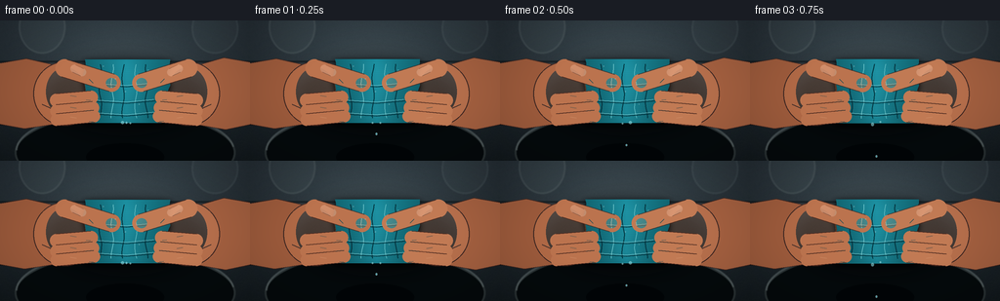
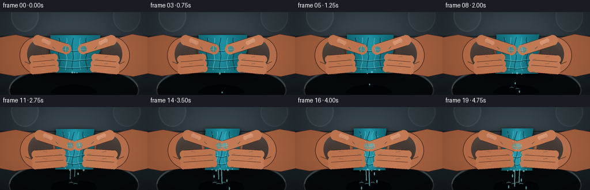
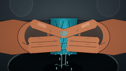

CODING AGENTS AS PIXEL WORLD MODELS
traex/GPT-5.6-Sol · mechanics_0018
点击播放 · 原生 RGB 像素
逐轮保存的候选
回放视频、检查图与代码变化。
每份候选均可单独播放。实际图片检查记录在下方工具轨迹中。
候选 01播放与检查图
点击播放 · 原生 RGB 像素


展开代码变化
--- 上一保存版本
+++ 本次保存版本
@@ -0,0 +1,255 @@
+from pathlib import Path
+import json, math
+import numpy as np
+from PIL import Image, ImageDraw, ImageFilter
+import artifact_io
+
+CASE_DIR = Path(__file__).resolve().parent
+SPEC = json.loads((CASE_DIR/'task_spec.json').read_text())
+W,H,N = SPEC['width'], SPEC['height'], SPEC['frames']
+S=3
+w,h=W*S,H*S
+rng=np.random.default_rng(18018)
+
+# static photographic background at working resolution
+Y,X=np.mgrid[0:h,0:w]
+# cool, dark utility sink / counter
+base=np.zeros((h,w,3),dtype=np.float32)
+vertical=1-Y/h
+base[...,0]=20+16*vertical
+base[...,1]=27+19*vertical
+base[...,2]=31+22*vertical
+# soft overhead pool of light
+light=np.exp(-(((X-w*.49)/(w*.58))**2+((Y-h*.25)/(h*.62))**2)*2.1)
+base += light[...,None]*np.array([25,28,28])
+# subtle fixed sensor/material grain
+noise=rng.normal(0,2.0,(h,w,1))
+base+=noise
+base=np.uint8(np.clip(base,0,255))
+bg=Image.fromarray(base,'RGB')
+d=ImageDraw.Draw(bg,'RGBA')
+def scbox(b): return tuple(int(v*S) for v in b)
+# large backsplash grout and counter lip
+d.line([(0,42*S),(w,42*S)],fill=(5,10,12,125),width=2*S)
+d.line([(0,44*S),(w,44*S)],fill=(115,126,127,28),width=1*S)
+d.line([(0,106*S),(w,106*S)],fill=(8,11,12,230),width=2*S)
+# blurred faucet-like glints far in background
+d.ellipse(scbox((19,-21,67,34)),fill=(113,127,129,28),outline=(190,200,198,20),width=2*S)
+d.ellipse(scbox((196,-18,244,34)),fill=(106,120,122,22),outline=(190,200,198,15),width=2*S)
+# sink bowl and rim
+d.ellipse(scbox((15,94,241,177)),fill=(4,9,11,245),outline=(106,121,123,100),width=2*S)
+d.arc(scbox((16,92,240,174)),180,355,fill=(165,180,181,76),width=2*S)
+d.ellipse(scbox((88,126,168,154)),fill=(2,5,7,230))
+bg=bg.filter(ImageFilter.GaussianBlur(.35*S))
+
+def smoothstep(x): return x*x*(3-2*x)
+
+def poly(draw, pts, fill, outline=None, width=1):
+ pp=[(int(x*S),int(y*S)) for x,y in pts]
+ draw.polygon(pp,fill=fill)
+ if outline: draw.line(pp+[pp[0]],fill=outline,width=width*S,joint='curve')
+
+def ellipse(draw,b,fill,outline=None,width=1):
+ draw.ellipse(scbox(b),fill=fill,outline=outline,width=max(1,int(width*S)) if outline else 1)
+
+def line(draw,pts,fill,width):
+ draw.line([(int(x*S),int(y*S)) for x,y in pts],fill=fill,width=max(1,int(width*S)),joint='curve')
+
+def capsule(draw, a,b,r,fill,outline=None,width=1):
+ ax,ay=a; bx,by=b
+ vx,vy=bx-ax,by-ay; L=max(.001,math.hypot(vx,vy)); nx=-vy/L*r; ny=vx/L*r
+ pts=[(ax+nx,ay+ny),(bx+nx,by+ny),(bx-nx,by-ny),(ax-nx,ay-ny)]
+ poly(draw,pts,fill)
+ ellipse(draw,(ax-r,ay-r,ax+r,ay+r),fill)
+ ellipse(draw,(bx-r,by-r,bx+r,by+r),fill)
+ if outline:
+ line(draw,[(ax+nx,ay+ny),(bx+nx,by+ny)],outline,width)
+ line(draw,[(ax-nx,ay-ny),(bx-nx,by-ny)],outline,width)
+
+# masks and textures for towel
+def towel_layer(frame_i,p):
+ cx=129.5
+ half=43-16*p
+ top=40-3*p
+ bot=105+5*p
+ # irregular textile silhouette, fixed coherent contour with pressure deformation
+ pts=[]
+ for k in range(18):
+ t=k/17
+ x=cx-half+1.5*math.sin(t*5*math.pi+0.4)*(1-.45*p)
+ y=top+(bot-top)*t
+ pts.append((x,y))
+ for k in range(18):
+ t=1-k/17
+ x=cx+half+1.7*math.sin(t*5.5*math.pi+1.2)*(1-.45*p)
+ y=top+(bot-top)*t
+ pts.append((x,y))
+ mask=Image.new('L',(w,h),0); md=ImageDraw.Draw(mask)
+ md.polygon([(int(x*S),int(y*S)) for x,y in pts],fill=255)
+ yy,xx=np.mgrid[0:h,0:w]
+ xn=(xx/S-cx)/max(half,1); yn=(yy/S-(top+bot)/2)/((bot-top)/2)
+ # rich cyan cotton with compression-darkened sides and wet specular center
+ fixed=np.random.default_rng(912).normal(0,1,(h,w))
+ coarse=np.asarray(Image.fromarray(np.uint8(np.clip((fixed+2)*55,0,255))).filter(ImageFilter.GaussianBlur(2.2*S))).astype(float)/55-2
+ weave=3.2*np.sin(xx/S*math.pi*1.35)+2.4*np.sin(yy/S*math.pi*1.08)
+ edge=np.clip(1-np.abs(xn),0,1)
+ shade=33*edge + 11*(1-yn) - 17*np.abs(xn) + weave + coarse*7
+ # folds deepen as squeeze increases
+ folds=np.zeros_like(shade)
+ for center,amp,widthf in [(-.58,-25,0.08),(-.18,20,.11),(.18,-21,.075),(.52,17,.10)]:
+ curved=center + .10*np.sin((yn+1)*3.4+center*4)
+ folds += amp*np.exp(-((xn-curved)/widthf)**2)*(0.4+0.6*p)
+ rr=17+shade*.16; gg=99+shade*.72; bb=111+shade*.81
+ arr=np.stack([rr,gg,bb],axis=-1)
+ # wet central highlights
+ wet=np.exp(-((xn+.12*np.sin(yn*4))/.34)**2)*np.exp(-(yn/.96)**6)
+ arr += wet[...,None]*np.array([15,29,31])*(.35+.65*p)
+ arr=np.uint8(np.clip(arr,0,255))
+ tex=Image.fromarray(arr,'RGB'); tex.putalpha(mask)
+ return tex,mask,(cx,half,top,bot)
+
+def skin_polygon(draw,pts,base=(174,107,72,255),edge=(75,38,28,180)):
+ poly(draw,pts,base,edge,1)
+
+frames=[]
+for i in range(N):
+ q=i/(N-1)
+ # nonlinear pressure increase (slow setup then determined squeeze)
+ p=smoothstep(q)
+ im=bg.copy().convert('RGBA')
+ # stable ambient vignette
+ shade=Image.new('RGBA',(w,h),(0,0,0,0)); sd=ImageDraw.Draw(shade,'RGBA')
+ sd.rectangle((0,0,w,h),fill=(0,0,0,8))
+ # contact shadow behind hands/towel
+ sd.ellipse(scbox((46,39,211,117)),fill=(0,0,0,95))
+ shade=shade.filter(ImageFilter.GaussianBlur(7*S)); im=Image.alpha_composite(im,shade)
+
+ # rear hands and wrists move inward
+ hands=Image.new('RGBA',(w,h),(0,0,0,0)); hd=ImageDraw.Draw(hands,'RGBA')
+ move=9*p
+ # wrists (organic tapered silhouettes)
+ skin_polygon(hd,[(-8,45),(27,39),(58+move,46),(89+move,61),(91+move,89),(65+move,105),(25,111),(-8,105)],(157,91,60,255))
+ skin_polygon(hd,[(264,44),(229,38),(198-move,47),(169-move,61),(168-move,90),(191-move,105),(231,112),(264,105)],(164,96,64,255))
+ # palms, warmer centers
+ ellipse(hd,(34+move*.15,42,99+move,108),(176,105,70,255),(77,39,29,180),1)
+ ellipse(hd,(160-move,42,225-move*.15,108),(182,111,76,255),(77,39,29,180),1)
+ # palm modeling shadows/highlights
+ ellipse(hd,(47+move*.3,48,87+move,98),(216,143,102,58))
+ ellipse(hd,(172-move,48,212-move*.3,98),(225,151,110,52))
+ line(hd,[(43+move*.2,86),(65+move*.6,96),(83+move,89)],(94,49,36,85),1.2)
+ line(hd,[(216-move*.2,86),(194-move*.6,96),(176-move,89)],(94,49,36,85),1.2)
+ im=Image.alpha_composite(im,hands)
+
+ # towel and cast shadow
+ towel,mask,geom=towel_layer(i,p); cx,half,top,bot=geom
+ tsh=Image.new('RGBA',(w,h),(0,0,0,0)); tsh.putalpha(mask.filter(ImageFilter.GaussianBlur(2*S)))
+ dark=Image.new('RGBA',(w,h),(0,0,0,105)); dark.putalpha(mask.filter(ImageFilter.GaussianBlur(3*S)))
+ # offset shadow slightly downward
+ off=Image.new('RGBA',(w,h),(0,0,0,0)); off.alpha_composite(dark,(0,2*S))
+ im=Image.alpha_composite(im,off)
+ im=Image.alpha_composite(im,towel)
+
+ # wet sheen and towel fold lines on top
+ td=ImageDraw.Draw(im,'RGBA')
+ # vertical wrinkling converges toward squeeze center
+ for j,(rel,col) in enumerate([(-.62,(4,47,58,110)),(-.34,(116,202,207,75)),(-.08,(3,57,67,120)),(.22,(98,189,195,65)),(.48,(4,51,61,105))]):
+ x0=cx+rel*half
+ pts=[]
+ for k in range(12):
+ yy=top+5+k*(bot-top-10)/11
+ xx=x0+math.sin(k*.93+j)* (1.3+1.2*p)
+ pts.append((xx,yy))
+ line(td,pts,col,0.8 if j%2 else 1.2)
+ # compression creases across middle
+ for yy,alpha in [(66,95),(83,75),(96,65)]:
+ bow=2+3*p
+ line(td,[(cx-half*.8,yy),(cx,yy+bow),(cx+half*.8,yy-1)],(3,47,56,alpha),1)
+ line(td,[(cx-half*.72,yy-1.2),(cx,yy+bow-1.3),(cx+half*.65,yy-2)],(151,218,220,alpha//2),.6)
+
+ # Front fingers: curled digits increasingly overlap and press towel
+ fg=Image.new('RGBA',(w,h),(0,0,0,0)); fd=ImageDraw.Draw(fg,'RGBA')
+ left_tip=cx-half+7+6*p; right_tip=cx+half-7-6*p
+ skinL=(187,115,78,255); skinR=(193,122,84,255); outline=(79,39,28,190)
+ # lower three gripping fingers, varied angle and size
+ ys=[79,91,101]
+ for j,yy in enumerate(ys):
+ r=6.8-j*.35
+ # endpoints close in under pressure
+ a=(58+move*.65,yy+3-j*1.0)
+ b=(left_tip+1.5*j,yy-1.3*j)
+ capsule(fd,a,b,r,skinL,outline,1)
+ # knuckle light and crease near fingertip
+ line(fd,[(72+move*.5,yy-2),(78+move*.7,yy-1)],(244,184,139,80),1.1)
+ line(fd,[(b[0]-5,yy+2.5),(b[0]-1,yy+2.8)],(100,54,40,100),.8)
+ a2=(201-move*.65,yy+3-j*1.0)
+ b2=(right_tip-1.5*j,yy-1.3*j)
+ capsule(fd,a2,b2,r,skinR,outline,1)
+ line(fd,[(187-move*.5,yy-2),(181-move*.7,yy-1)],(250,191,147,72),1.1)
+ line(fd,[(b2[0]+5,yy+2.5),(b2[0]+1,yy+2.8)],(100,54,40,100),.8)
+ # prominent opposing thumbs diagonally press the upper center
+ lt=(cx-half*.35+7*p,64+4*p); rt=(cx+half*.35-7*p,64+4*p)
+ capsule(fd,(66+move*.55,49),lt,9.2,skinL,outline,1)
+ capsule(fd,(193-move*.55,49),rt,9.2,skinR,outline,1)
+ # thumb nails, glossy and anatomically aligned
+ capsule(fd,(76+move*.5,49.5),(84+move*.65,53.1),4.0,(211,145,110,230),(120,67,49,120),.6)
+ capsule(fd,(183-move*.5,49.5),(175-move*.65,53.1),4.0,(220,154,118,230),(120,67,49,120),.6)
+ # pressure blanching at contact tips
+ ellipse(fd,(lt[0]-6,lt[1]-5,lt[0]+5,lt[1]+5),(225,158,117,int(55+55*p)))
+ ellipse(fd,(rt[0]-5,rt[1]-5,rt[0]+6,rt[1]+5),(232,166,124,int(55+55*p)))
+ # finger creases
+ for x,sgn in [(91+move,1),(168-move,-1)]:
+ line(fd,[(x,60),(x+sgn*4,64)],(102,53,39,105),.8)
+ im=Image.alpha_composite(im,fg)
+
+ # water emerging downward: sheen, droplets and streams increase with pressure
+ water=Image.new('RGBA',(w,h),(0,0,0,0)); wd=ImageDraw.Draw(water,'RGBA')
+ # bead row along compressed cloth bottom
+ bead_count=2+int(5*p)
+ for k in range(bead_count):
+ bx=cx+(k-(bead_count-1)/2)*min(8,half*1.4/max(bead_count,1))+2*math.sin(k*3.1)
+ by=bot-1+1.5*math.sin(k*2.3+i*.45)
+ rr=1.0+0.7*((k+i)%3==0)
+ ellipse(wd,(bx-rr,by-rr*.5,bx+rr,by+rr*1.5),(142,226,232,150),(219,250,250,105),.5)
+ # coherent falling droplets; their number and length grows, positions cycle like timelapse
+ intensity=max(0,(p-.06)/.94)
+ streams=int(1+5*intensity)
+ for k in range(streams):
+ sx=cx+(k-(streams-1)/2)*min(7.0,half*1.3/max(streams,1))+1.5*math.sin(k*2.7)
+ phase=(i*.31+k*.41)%1.0
+ length=(4+25*intensity)*(0.65+0.35*math.sin(k*1.9+1)**2)
+ if intensity>.35 and k in (streams//2,max(0,streams//2-1)):
+ # nearly continuous thread from towel to bowl
+ line(wd,[(sx,bot-1),(sx+math.sin(i*.4+k)*1.2,min(138,bot+length))],(128,220,229,int(95+90*intensity)),.75+1.15*intensity)
+ line(wd,[(sx-.35,bot),(sx-.1,min(138,bot+length))],(229,255,255,100),.35)
+ else:
+ dy=phase*max(5,142-bot)
+ ry=1.3+1.7*intensity
+ ellipse(wd,(sx-1.0,bot+dy-ry,sx+1.0,bot+dy+ry),(124,217,229,185),(227,255,255,130),.5)
+ # little splash crowns at bowl surface, more pronounced late
+ if p>.28:
+ for k in range(1+int(3*p)):
+ xx=cx+(k-(1+int(3*p))/2)*8+math.sin(i*.7+k)*2
+ yy=132+(k%2)*2
+ wd.arc(scbox((xx-4,yy-2,xx+4,yy+2)),190,350,fill=(139,224,231,int(90+80*p)),width=1*S)
+ line(wd,[(xx,yy),(xx+math.sin(k*4)*3,yy-3-2*p)],(178,238,241,120),.6)
+ # pinpoint specular highlights on wet knuckles/towel
+ for k in range(5):
+ sx=cx-half*.55+k*(half*1.1/4)+math.sin(k*9)*1.2
+ sy=47+((k*13)%48)
+ ellipse(wd,(sx-.65,sy-.45,sx+.65,sy+.45),(235,255,255,int(80+70*p)))
+ water=water.filter(ImageFilter.GaussianBlur(.18*S))
+ im=Image.alpha_composite(im,water)
+
+ # cinematic vignette and warm top-left light
+ arr=np.asarray(im.convert('RGB')).astype(np.float32)
+ yy,xx=np.mgrid[0:h,0:w]
+ rr=((xx-w*.5)/(w*.72))**2+((yy-h*.5)/(h*.76))**2
+ vig=np.clip(1-.26*np.maximum(0,rr-.18),.72,1)
+ arr*=vig[...,None]
+ # downsample filmically
+ out=Image.fromarray(np.uint8(np.clip(arr,0,255))).resize((W,H),Image.Resampling.LANCZOS)
+ frames.append(np.asarray(out,dtype=np.uint8))
+
+frames=np.stack(frames)
+artifact_io.save(frames,CASE_DIR)
+print('saved',frames.shape,frames.dtype)
可观测工具轨迹
实际执行的命令与返回图片。
命令 1exit 0
/bin/bash -lc "cat prompt.txt && printf '\\n---RULES---\\n' && cat GENERATION_RULES.md && printf '\\n---SPEC---\\n' && cat task_spec.json"
命令 2exit 0
/bin/bash -lc "find . -maxdepth 2 -type f -printf '%p\\n' | sort"
命令 3exit 0
/bin/bash -lc 'cat artifact_io.py'
命令 4exit 1
/bin/bash -lc "cat > generate.py <<'PY'
from pathlib import Path
import json, math
import numpy as np
from PIL import Image, ImageDraw, ImageFilter
import artifact_io
CASE_DIR = Path(__file__).resolve().parent
SPEC = json.loads((CASE_DIR/'task_spec.json').read_text())
W,H,N = SPEC['width'], SPEC['height'], SPEC['frames']
S=3
w,h=W*S,H*S
rng=np.random.default_rng(18018)
# static photographic background at working resolution
Y,X=np.mgrid[0:h,0:w]
# cool, dark utility sink / counter
base=np.zeros((h,w,3),dtype=np.float32)
vertical=1-Y/h
base[...,0]=20+16*vertical
base[...,1]=27+19*vertical
base[...,2]=31+22*vertical
# soft overhead pool of light
light=np.exp(-(((X-w*.49)/(w*.58))**2+((Y-h*.25)/(h*.62))**2)*2.1)
base += light[...,None]*np.array([25,28,28])
# subtle fixed sensor/material grain
noise=rng.normal(0,2.0,(h,w,1))
base+=noise
base=np.uint8(np.clip(base,0,255))
bg=Image.fromarray(base,'RGB')
d=ImageDraw.Draw(bg,'RGBA')
def scbox(b): return tuple(int(v*S) for v in b)
# large backsplash grout and counter lip
d.line([(0,42*S),(w,42*S)],fill=(5,10,12,125),width=2*S)
d.line([(0,44*S),(w,44*S)],fill=(115,126,127,28),width=1*S)
d.line([(0,106*S),(w,106*S)],fill=(8,11,12,230),width=2*S)
# blurred faucet-like glints far in background
d.ellipse(scbox((19,-21,67,34)),fill=(113,127,129,28),outline=(190,200,198,20),width=2*S)
d.ellipse(scbox((196,-18,244,34)),fill=(106,120,122,22),outline=(190,200,198,15),width=2*S)
# sink bowl and rim
d.ellipse(scbox((15,94,241,177)),fill=(4,9,11,245),outline=(106,121,123,100),width=2*S)
d.arc(scbox((16,92,240,174)),180,355,fill=(165,180,181,76),width=2*S)
d.ellipse(scbox((88,126,168,154)),fill=(2,5,7,230))
bg=bg.filter(ImageFilter.GaussianBlur(.35*S))
def smoothstep(x): return x*x*(3-2*x)
def poly(draw, pts, fill, outline=None, width=1):
pp=[(int(x*S),int(y*S)) for x,y in pts]
draw.polygon(pp,fill=fill)
if outline: draw.line(pp+[pp[0]],fill=outline,width=width*S,joint='curve')
def ellipse(draw,b,fill,outline=None,width=1):
draw.ellipse(scbox(b),fill=fill,outline=outline,width=width*S if outline else 1)
def line(draw,pts,fill,width):
draw.line([(int(x*S),int(y*S)) for x,y in pts],fill=fill,width=max(1,int(width*S)),joint='curve')
def capsule(draw, a,b,r,fill,outline=None,width=1):
ax,ay=a; bx,by=b
vx,vy=bx-ax,by-ay; L=max(.001,math.hypot(vx,vy)); nx=-vy/L*r; ny=vx/L*r
pts=[(ax+nx,ay+ny),(bx+nx,by+ny),(bx-nx,by-ny),(ax-nx,ay-ny)]
poly(draw,pts,fill)
ellipse(draw,(ax-r,ay-r,ax+r,ay+r),fill)
ellipse(draw,(bx-r,by-r,bx+r,by+r),fill)
if outline:
line(draw,[(ax+nx,ay+ny),(bx+nx,by+ny)],outline,width)
line(draw,[(ax-nx,ay-ny),(bx-nx,by-ny)],outline,width)
# masks and textures for towel
def towel_layer(frame_i,p):
cx=129.5
half=43-16*p
top=40-3*p
bot=105+5*p
# irregular textile silhouette, fixed coherent contour with pressure deformation
pts=[]
for k in range(18):
t=k/17
x=cx-half+1.5*math.sin(t*5*math.pi+0.4)*(1-.45*p)
y=top+(bot-top)*t
pts.append((x,y))
for k in range(18):
t=1-k/17
x=cx+half+1.7*math.sin(t*5.5*math.pi+1.2)*(1-.45*p)
y=top+(bot-top)*t
pts.append((x,y))
mask=Image.new('L',(w,h),0); md=ImageDraw.Draw(mask)
md.polygon([(int(x*S),int(y*S)) for x,y in pts],fill=255)
yy,xx=np.mgrid[0:h,0:w]
xn=(xx/S-cx)/max(half,1); yn=(yy/S-(top+bot)/2)/((bot-top)/2)
# rich cyan cotton with compression-darkened sides and wet specular center
fixed=np.random.default_rng(912).normal(0,1,(h,w))
coarse=np.asarray(Image.fromarray(np.uint8(np.clip((fixed+2)*55,0,255))).filter(ImageFilter.GaussianBlur(2.2*S))).astype(float)/55-2
weave=3.2*np.sin(xx/S*math.pi*1.35)+2.4*np.sin(yy/S*math.pi*1.08)
edge=np.clip(1-np.abs(xn),0,1)
shade=33*edge + 11*(1-yn) - 17*np.abs(xn) + weave + coarse*7
# folds deepen as squeeze increases
folds=np.zeros_like(shade)
for center,amp,widthf in [(-.58,-25,0.08),(-.18,20,.11),(.18,-21,.075),(.52,17,.10)]:
curved=center + .10*np.sin((yn+1)*3.4+center*4)
folds += amp*np.exp(-((xn-curved)/widthf)**2)*(0.4+0.6*p)
rr=17+shade*.16; gg=99+shade*.72; bb=111+shade*.81
arr=np.stack([rr,gg,bb],axis=-1)
# wet central highlights
wet=np.exp(-((xn+.12*np.sin(yn*4))/.34)**2)*np.exp(-(yn/.96)**6)
arr += wet[...,None]*np.array([15,29,31])*(.35+.65*p)
arr=np.uint8(np.clip(arr,0,255))
tex=Image.fromarray(arr,'RGB'); tex.putalpha(mask)
return tex,mask,(cx,half,top,bot)
def skin_polygon(draw,pts,base=(174,107,72,255),edge=(75,38,28,180)):
poly(draw,pts,base,edge,1)
frames=[]
for i in range(N):
q=i/(N-1)
# nonlinear pressure increase (slow setup then determined squeeze)
p=smoothstep(q)
im=bg.copy().convert('RGBA')
# stable ambient vignette
shade=Image.new('RGBA',(w,h),(0,0,0,0)); sd=ImageDraw.Draw(shade,'RGBA')
sd.rectangle((0,0,w,h),fill=(0,0,0,8))
# contact shadow behind hands/towel
sd.ellipse(scbox((46,39,211,117)),fill=(0,0,0,95))
shade=shade.filter(ImageFilter.GaussianBlur(7*S)); im=Image.alpha_composite(im,shade)
# rear hands and wrists move inward
hands=Image.new('RGBA',(w,h),(0,0,0,0)); hd=ImageDraw.Draw(hands,'RGBA')
move=9*p
# wrists (organic tapered silhouettes)
skin_polygon(hd,[(-8,45),(27,39),(58+move,46),(89+move,61),(91+move,89),(65+move,105),(25,111),(-8,105)],(157,91,60,255))
skin_polygon(hd,[(264,44),(229,38),(198-move,47),(169-move,61),(168-move,90),(191-move,105),(231,112),(264,105)],(164,96,64,255))
# palms, warmer centers
ellipse(hd,(34+move*.15,42,99+move,108),(176,105,70,255),(77,39,29,180),1)
ellipse(hd,(160-move,42,225-move*.15,108),(182,111,76,255),(77,39,29,180),1)
# palm modeling shadows/highlights
ellipse(hd,(47+move*.3,48,87+move,98),(216,143,102,58))
ellipse(hd,(172-move,48,212-move*.3,98),(225,151,110,52))
line(hd,[(43+move*.2,86),(65+move*.6,96),(83+move,89)],(94,49,36,85),1.2)
line(hd,[(216-move*.2,86),(194-move*.6,96),(176-move,89)],(94,49,36,85),1.2)
im=Image.alpha_composite(im,hands)
# towel and cast shadow
towel,mask,geom=towel_layer(i,p); cx,half,top,bot=geom
tsh=Image.new('RGBA',(w,h),(0,0,0,0)); tsh.putalpha(mask.filter(ImageFilter.GaussianBlur(2*S)))
dark=Image.new('RGBA',(w,h),(0,0,0,105)); dark.putalpha(mask.filter(ImageFilter.GaussianBlur(3*S)))
# offset shadow slightly downward
off=Image.new('RGBA',(w,h),(0,0,0,0)); off.alpha_composite(dark,(0,2*S))
im=Image.alpha_composite(im,off)
im=Image.alpha_composite(im,towel)
# wet sheen and towel fold lines on top
td=ImageDraw.Draw(im,'RGBA')
# vertical wrinkling converges toward squeeze center
for j,(rel,col) in enumerate([(-.62,(4,47,58,110)),(-.34,(116,202,207,75)),(-.08,(3,57,67,120)),(.22,(98,189,195,65)),(.48,(4,51,61,105))]):
x0=cx+rel*half
pts=[]
for k in range(12):
yy=top+5+k*(bot-top-10)/11
xx=x0+math.sin(k*.93+j)* (1.3+1.2*p)
pts.append((xx,yy))
line(td,pts,col,0.8 if j%2 else 1.2)
# compression creases across middle
for yy,alpha in [(66,95),(83,75),(96,65)]:
bow=2+3*p
line(td,[(cx-half*.8,yy),(cx,yy+bow),(cx+half*.8,yy-1)],(3,47,56,alpha),1)
line(td,[(cx-half*.72,yy-1.2),(cx,yy+bow-1.3),(cx+half*.65,yy-2)],(151,218,220,alpha//2),.6)
# Front fingers: curled digits increasingly overlap and press towel
fg=Image.new('RGBA',(w,h),(0,0,0,0)); fd=ImageDraw.Draw(fg,'RGBA')
left_tip=cx-half+7+6*p; right_tip=cx+half-7-6*p
skinL=(187,115,78,255); skinR=(193,122,84,255); outline=(79,39,28,190)
# lower three gripping fingers, varied angle and size
ys=[79,91,101]
for j,yy in enumerate(ys):
r=6.8-j*.35
# endpoints close in under pressure
a=(58+move*.65,yy+3-j*1.0)
b=(left_tip+1.5*j,yy-1.3*j)
capsule(fd,a,b,r,skinL,outline,1)
# knuckle light and crease near fingertip
line(fd,[(72+move*.5,yy-2),(78+move*.7,yy-1)],(244,184,139,80),1.1)
line(fd,[(b[0]-5,yy+2.5),(b[0]-1,yy+2.8)],(100,54,40,100),.8)
a2=(201-move*.65,yy+3-j*1.0)
b2=(right_tip-1.5*j,yy-1.3*j)
capsule(fd,a2,b2,r,skinR,outline,1)
line(fd,[(187-move*.5,yy-2),(181-move*.7,yy-1)],(250,191,147,72),1.1)
line(fd,[(b2[0]+5,yy+2.5),(b2[0]+1,yy+2.8)],(100,54,40,100),.8)
# prominent opposing thumbs diagonally press the upper center
lt=(cx-half*.35+7*p,64+4*p); rt=(cx+half*.35-7*p,64+4*p)
capsule(fd,(66+move*.55,49),lt,9.2,skinL,outline,1)
capsule(fd,(193-move*.55,49),rt,9.2,skinR,outline,1)
# thumb nails, glossy and anatomically aligned
capsule(fd,(76+move*.5,49.5),(84+move*.65,53.1),4.0,(211,145,110,230),(120,67,49,120),.6)
capsule(fd,(183-move*.5,49.5),(175-move*.65,53.1),4.0,(220,154,118,230),(120,67,49,120),.6)
# pressure blanching at contact tips
ellipse(fd,(lt[0]-6,lt[1]-5,lt[0]+5,lt[1]+5),(225,158,117,int(55+55*p)))
ellipse(fd,(rt[0]-5,rt[1]-5,rt[0]+6,rt[1]+5),(232,166,124,int(55+55*p)))
# finger creases
for x,sgn in [(91+move,1),(168-move,-1)]:
line(fd,[(x,60),(x+sgn*4,64)],(102,53,39,105),.8)
im=Image.alpha_composite(im,fg)
# water emerging downward: sheen, droplets and streams increase with pressure
water=Image.new('RGBA',(w,h),(0,0,0,0)); wd=ImageDraw.Draw(water,'RGBA')
# bead row along compressed cloth bottom
bead_count=2+int(5*p)
for k in range(bead_count):
bx=cx+(k-(bead_count-1)/2)*min(8,half*1.4/max(bead_count,1))+2*math.sin(k*3.1)
by=bot-1+1.5*math.sin(k*2.3+i*.45)
rr=1.0+0.7*((k+i)%3==0)
ellipse(wd,(bx-rr,by-rr*.5,bx+rr,by+rr*1.5),(142,226,232,150),(219,250,250,105),.5)
# coherent falling droplets; their number and length grows, positions cycle like timelapse
intensity=max(0,(p-.06)/.94)
streams=int(1+5*intensity)
for k in range(streams):
sx=cx+(k-(streams-1)/2)*min(7.0,half*1.3/max(streams,1))+1.5*math.sin(k*2.7)
phase=(i*.31+k*.41)%1.0
length=(4+25*intensity)*(0.65+0.35*math.sin(k*1.9+1)**2)
if intensity>.35 and k in (streams//2,max(0,streams//2-1)):
# nearly continuous thread from towel to bowl
line(wd,[(sx,bot-1),(sx+math.sin(i*.4+k)*1.2,min(138,bot+length))],(128,220,229,int(95+90*intensity)),.75+1.15*intensity)
line(wd,[(sx-.35,bot),(sx-.1,min(138,bot+length))],(229,255,255,100),.35)
else:
dy=phase*max(5,142-bot)
ry=1.3+1.7*intensity
ellipse(wd,(sx-1.0,bot+dy-ry,sx+1.0,bot+dy+ry),(124,217,229,185),(227,255,255,130),.5)
# little splash crowns at bowl surface, more pronounced late
if p>.28:
for k in range(1+int(3*p)):
xx=cx+(k-(1+int(3*p))/2)*8+math.sin(i*.7+k)*2
yy=132+(k%2)*2
wd.arc(scbox((xx-4,yy-2,xx+4,yy+2)),190,350,fill=(139,224,231,int(90+80*p)),width=1*S)
line(wd,[(xx,yy),(xx+math.sin(k*4)*3,yy-3-2*p)],(178,238,241,120),.6)
# pinpoint specular highlights on wet knuckles/towel
for k in range(5):
sx=cx-half*.55+k*(half*1.1/4)+math.sin(k*9)*1.2
sy=47+((k*13)%48)
ellipse(wd,(sx-.65,sy-.45,sx+.65,sy+.45),(235,255,255,int(80+70*p)))
water=water.filter(ImageFilter.GaussianBlur(.18*S))
im=Image.alpha_composite(im,water)
# cinematic vignette and warm top-left light
arr=np.asarray(im.convert('RGB')).astype(np.float32)
yy,xx=np.mgrid[0:h,0:w]
rr=((xx-w*.5)/(w*.72))**2+((yy-h*.5)/(h*.76))**2
vig=np.clip(1-.26*np.maximum(0,rr-.18),.72,1)
arr*=vig[...,None]
# downsample filmically
out=Image.fromarray(np.uint8(np.clip(arr,0,255))).resize((W,H),Image.Resampling.LANCZOS)
frames.append(np.asarray(out,dtype=np.uint8))
frames=np.stack(frames)
artifact_io.save(frames,CASE_DIR)
print('saved',frames.shape,frames.dtype)
PY
python generate.py"命令 5exit 0
/bin/bash -lc "python - <<'PY' p='generate.py' s=open(p).read().replace(\"width=width*S if outline else 1)\",\"width=max(1,int(width*S)) if outline else 1)\") open(p,'w').write(s) PY python generate.py"
命令 6exit 0
/bin/bash -lc "python - <<'PY'
from pathlib import Path
import numpy as np
p=Path('.')
a=np.load('pixels.npz')['pixels']
print('pixels',a.shape,a.dtype,'frames_png',len(list((p/'frames').glob('*.png'))))
print('artifacts',[(x.name,x.stat().st_size) for x in [p/'pixels.npz',p/'index.html',p/'inspection.png',p/'transition_check.png',p/'generate.py']])
PY"视觉工具实际返回图片 1

视觉工具实际返回图片 2

保存候选 1 份；完成命令 6 次；可验证图片返回 2 张。原始 API 响应与完整日志保留在本地。